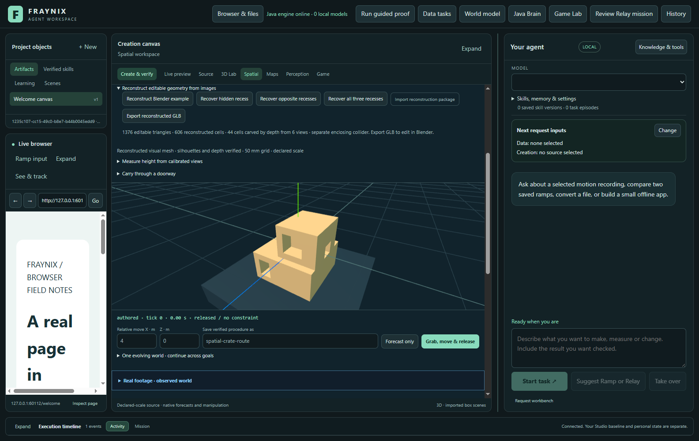
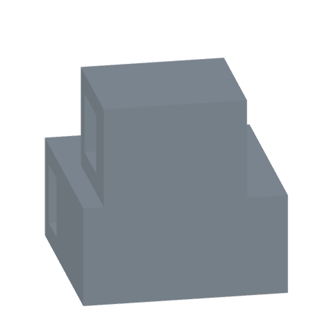

Recover the perpendicular recess
A registered side view exposes a 100 mm recess the opposing depth grids could not see.
The perpendicular view removed eight additional cells and recovered a 100 mm recess. Blender checked 1,176 offset rays across six directions and a separate oblique view.

Fraynix shows the side recess in the mesh carved from six views
The original bracket from a withheld oblique view

The opposing Z control leaves the side wall filled
The side observation recovers the recess in the exported mesh
System files
Open source